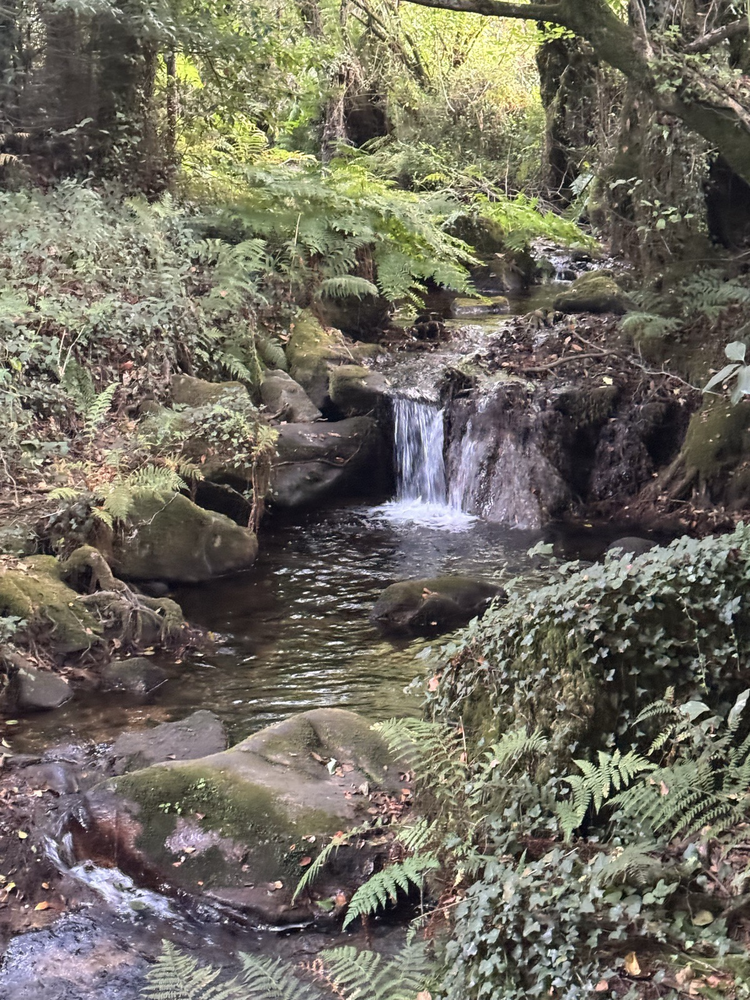
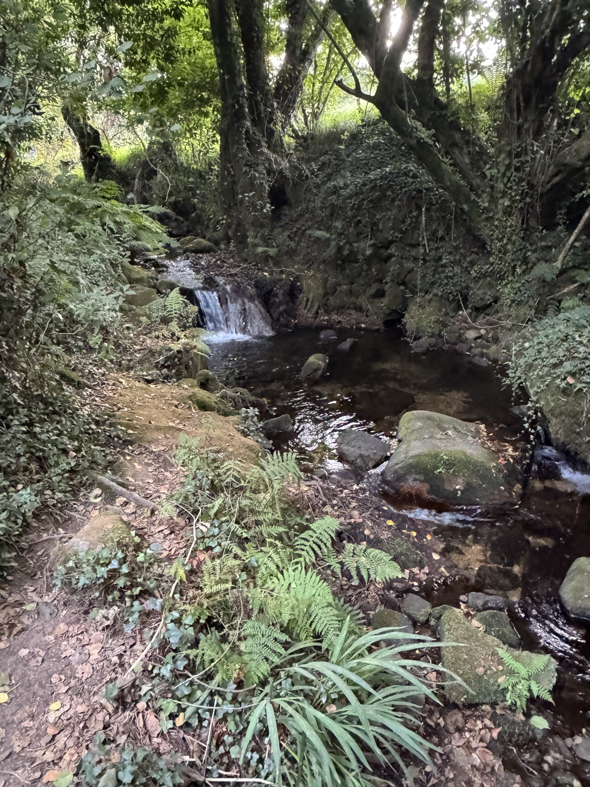
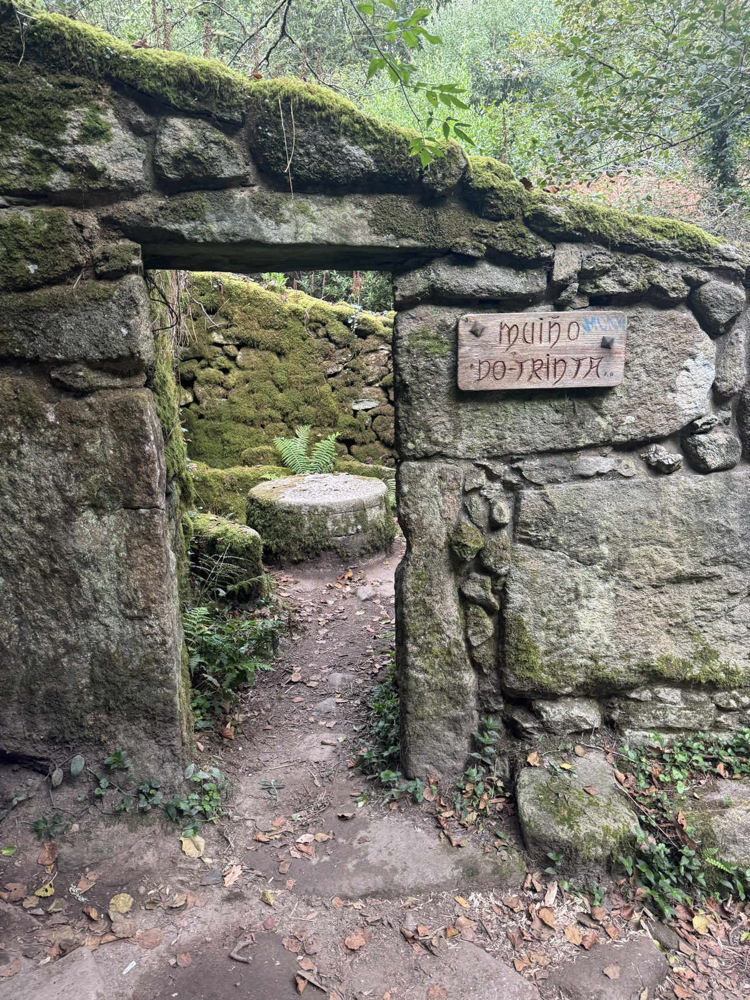
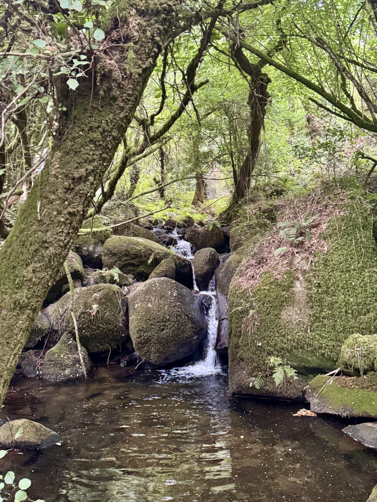
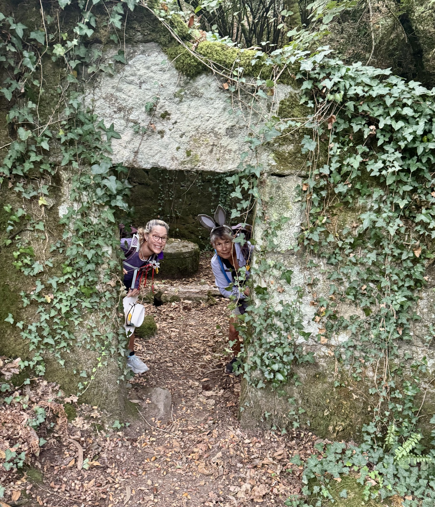

Stage 12: Armenia to Pontearnelas
Data: 8.39 miles, 410 feet elevation gain, 3.25 hours moving time, 4.24 total time.
Hotel: O Legado De Ramira
Picture Sherwood Forest, Bilbo Baggins’ and Gandolf’s stomping grounds, and the color green. Today’s hike was all that and smelled, sounded, and shone every green hue imaginable. Green mosses blanketed logs and trees, while ferns grew indiscriminately on branches, forest floors, and stony ledges. Water trickling over stones thousands of years old and pooling in sandy troths beside old mills. Dappled sunshine softened the darker shades of green and provided a peek into the abandoned mill quarters.


Grinding wheels lay solid and impervious to time, but offering a glimpse of life long ago. I imagine the bags of corn, wheat, and millet flour ground on these ancient wheels. His grinding wheels were a major industrial game changer, enabling a multitude of people to make bread and feed their families without grinding the grain themselves.

It was almost impossible to stop taking photos of this fairyish hike with waterfalls, stone mills, and the feeling that hobbits, gollum, and trolls would magically appear. We hiked at our absolute slowest pace during this stage—snapping photos and appreciating this Misty Mountainesque wonderland.

